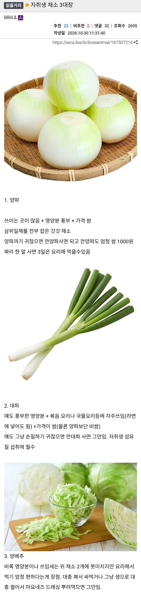

자취생 채소 3대장
댓글
조리해서 드시오
콩나물
양배추 질겨
자취생 채소 3대장은
참치, 스팸, 김
양배추는 없어도 되지만 마늘이 없으면 안되더라
야채 3대장 인정
깐양파가 음쓰도 안나오고 좋은데 안깐거랑 가격차이가 두배이상나서 쉽지않음ㅋㅋㅋ
놀랍게도 양파껍질은 일반쓰레기다. 말려서 종량제봉투에 넣으면 됨
갈은양파 얼린거 외국산 1키로 마넌 국산 2만원함 걍 그거 사서 쓰세여
저중에 양배추가 영양분 최고일걸?
공부좀 하고 오도록
콩나물이야 말로 진정한 자취생의 메이트
콩나물 좋긴한데 금방 상해서 오래 보관하기가 힘들더라 ㅋㅋㅋ
데쳐야 그나마 ㅋㅋ
왜 아삭이 고추가 없지 준비도 편한데
양파는 좀 힘든데...
개인적으로 파, 양배추, 콩나물 같음
냉동 양파 , 냉동 파 , 냉동 채소 믹스 = GOAT
양배추는 체고야
대파도 그냥 껍질까면되는거라 양파 보단 금방 손질되긴하든데 바나나까듯하면되니까 가위로도 쉽게 자르고
까는거 10초도 안걸리는데..
글고 대파는 보관통에 담아두면 한달넘게도 싱싱함
사두고 라면에라도 넣어먹길
콩나물 마늘 고추 파 미만 잡
오이 알배추 풋고추 그냥 쌈장 찍어먹는게 맛나서
오이 꿀맛
사두고 썩어서 버리는 재료 3대장 아니냐?
대파가 1황
마늘 양배추 양파가 삼대장정도지
양파 들어갈자리에 대파 넣는게 나을때도 많고
고추 마늘 상추
양배추만 있어도 충분함
할인으로 사서 채썰고 소분해서 냉동보관하면 오래 먹을 수 있음
양파 1알로 어떻게 3일 먹음..?
진짜 궁금해서 물어보는거
다른 사람들은 그렇게 먹는거야?
양배추 맛업서